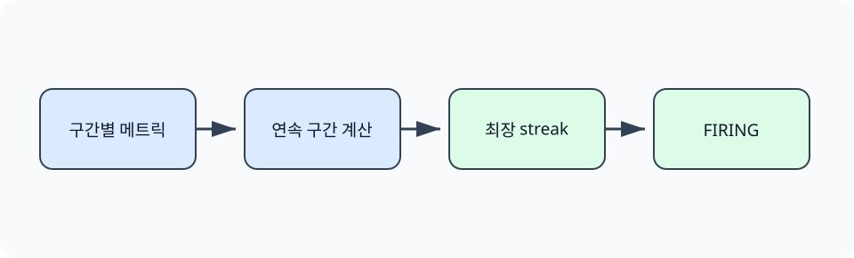

한경 KDT · LLM Agent 개발 & 바이브코딩 · Part 7 · 프로덕션 엔지니어링 · Ch 33 · CI/CD와 배포 운영
배포 명령의 성공은 사용자의 요청이 정상이라는 뜻이 아닙니다. 새 버전은 실행 중이어도 오류율과 지연이 함께 나빠질 수 있습니다. 이 절에서는 4분의 메트릭에서 오류율을 계산하고 이미 집계된 p95 지연을 읽어, 기준 위반이 두 구간 연속될 때만 FIRING으로 바꾸는 규칙을 실행합니다.
한 번의 순간 변동과 지속되는 이상을 구분하려면 시간 순서가 필요합니다. 3분과 4분의 연속 위반은 종료 코드 1을 만들고, 서로 떨어진 두 위반은 경보를 만들지 않는 반례로 확인합니다.
Ch29에서 운영 지표를 정의했고 Ch34에서 p95 계산을 더 자세히 다룹니다. 앞 절의 배포 식별자는 어떤 변경 뒤 지표가 달라졌는지 연결하는 기준이 됩니다. 이 절은 네 구간의 고정 자료로 지속 조건을 먼저 학습합니다.
체온이 한 번 높게 측정된 경우와 여러 번 이어진 발열은 대응 기준이 다릅니다. 운영 경보도 한 구간의 임계값 초과와 일정 시간 계속된 이상을 구분해 순간 변동으로 인한 호출을 줄입니다.
모니터링(monitoring)은 서비스의 요청 수, 오류, 지연, 자원 사용량 같은 상태를 지속해서 수집하고 해석하는 활동입니다. 메트릭(metric)은 시간에 따라 기록하는 수치입니다. p95 지연은 요청의 95%가 그 값 이내에 완료되었다는 뜻입니다. 경보 규칙(alerting rule)은 측정식과 임계값, 지속 시간을 조합해 사람이 확인할 상태를 만듭니다. 오류율 하나가 잠깐 높아졌다는 이유만으로 즉시 호출하면 잡음이 많아질 수 있으므로, 이 실습은 오류율과 p95 지연이 동시에 기준을 넘고 두 구간 이어질 때 FIRING으로 판정합니다.
앞 절은 배포 대상을 이미지 ID로 고정했습니다. 이제 대상이 실행된 뒤의 상태를 측정합니다. check_metrics.py는 분 번호로 행을 정렬하고, 두 조건을 동시에 만족한 연속 길이의 최댓값을 계산합니다.
오류율은 오류 수를 전체 요청 수로 나눈 비율이고, p95 지연은 요청 시간의 느린 쪽 경계를 나타냅니다. 예제는 각 분의 오류율을 계산하고 자료에 저장된 p95 지연을 읽은 뒤 error_rate > 0.05 and p95_ms > 800을 평가합니다. 한 조건만 넘은 1·2분은 경보가 아니고 두 조건이 함께 넘은 3·4분이 경보 구간입니다.
임계값을 한 번 넘었다고 바로 호출하면 일시적인 잡음에 반응할 수 있고, 너무 오래 기다리면 실제 장애 탐지가 늦어집니다. 지속 시간, 최소 요청 수, 복구 조건을 함께 정해야 합니다. 이 고정 자료의 5%와 800ms는 규칙 동작을 보여 주는 값이며 운영 서비스의 정상 기준은 실제 분포와 사용자 영향으로 정합니다.

경보는 원인을 확정하지 않습니다. 지속 조건이 충족됐다는 사실을 조사 시작 신호로 보내며, 실제 원인은 로그·트레이스·최근 배포 기록과 함께 확인합니다.
4분의 고정 메트릭을 읽고 각 분의 오류율을 계산합니다. p95 지연은 자료에 미리 집계된 값을 사용하며 원시 요청 시간으로 다시 계산하지 않습니다. 오류율 5% 초과와 p95 800ms 초과를 동시에 적용하며, 두 구간 이상 이어졌을 때 실제 검사 프로세스가 종료 코드 1을 반환하도록 합니다. 운영 경보 도구에서는 같은 조건을 PromQL 표현식과 `for` 지속 시간으로 옮길 수 있습니다.
준비된 Python 3.12 노트북에서 첫 셀부터 Shift+Enter로 하나씩 실행합니다. 안내한 결과를 먼저 확인하고 지정한 값 하나를 바꿔 비교합니다. 문서를 사용하는 실습은 파일 묶음이 필요합니다. 노트북과 실습 파일 함께 받기 · 처음 실습하는 방법. 전체 코드 복사에는 실험 셀 전체가 포함됩니다. 이 HTML에서는 코드를 실행하지 않습니다.
오류율과 p95 지연이 함께 기준을 넘은 상태가 두 구간 이어지는지 확인합니다.
첫 셀의 Path 탐색은 어느 상위 폴더에서 열어도 Ch33의 pyproject.toml을 기준으로 실습 폴더를 찾습니다. 뒤의 subprocess.run(..., cwd=lab, capture_output=True)은 명령을 별도 프로세스로 실행하고 화면 문구와 종료 코드를 함께 반환합니다. 이 보조 코드는 CI를 흉내 내는 공통 실행 경계이며, 각 절의 판정은 다음 셀에서 해당 명령의 실제 반환값을 읽어 결정합니다.
from pathlib import Path
import json, subprocess, sys
lab = next((p for p in [Path.cwd(), *Path.cwd().parents] if p.name == "ch33-cicd" and (p / "pyproject.toml").is_file()), Path("labs/part7/ch33-cicd")).resolve()
rows = [json.loads(x) for x in (lab / "data/metrics.jsonl").read_text().splitlines()]
print("rows=", len(rows))rows= 4
오류율은 오류 수를 전체 요청 수로 나눈 비율이고, p95 지연은 요청 시간의 느린 쪽 경계를 나타냅니다. 예제는 각 분의 오류율을 계산하고 자료에 저장된 p95 지연을 읽은 뒤 error_rate > 0.05 and p95_ms > 800을 평가합니다. 한 조건만 넘은 1·2분은 경보가 아니고 두 조건이 함께 넘은 3·4분이 경보 구간입니다.
for row in rows:
error_rate = row["errors"] / row["requests"]
firing = error_rate > 0.05 and row["p95_ms"] > 800
print(row["minute"], f"error_rate={error_rate:.3f}", f"p95={row['p95_ms']}", firing)1 error_rate=0.010 p95=320 False 2 error_rate=0.017 p95=360 False 3 error_rate=0.082 p95=920 True 4 error_rate=0.092 p95=1100 True
임계값을 한 번 넘었다고 바로 호출하면 일시적인 잡음에 반응할 수 있고, 너무 오래 기다리면 실제 장애 탐지가 늦어집니다. 지속 시간, 최소 요청 수, 복구 조건을 함께 정해야 합니다. 이 고정 자료의 5%와 800ms는 규칙 동작을 보여 주는 값이며 운영 서비스의 정상 기준은 실제 분포와 사용자 영향으로 정합니다.
result = subprocess.run([sys.executable, "scripts/check_metrics.py"], cwd=lab, text=True, capture_output=True)
print(result.stdout.strip())
print("exit_code=", result.returncode)
assert result.returncode == 11 0.01 320 False 2 0.017 360 False 3 0.082 920 True 4 0.092 1100 True alert: FIRING longest_streak=2 exit_code= 1
1·2분에는 두 조건을 동시에 만족하지 않았습니다. 3·4분에는 오류율 5% 초과와 p95 800ms 초과가 함께 관찰되어 경보 상태가 되었습니다. 이 고정 자료는 임계값 동작만 보여 주며 실제 서비스 정상 범위를 정하지 않습니다.
확인할 점 — 각 분의 오류율·p95·조건 결과를 읽고 3·4분만 동시에 참인지 확인합니다. 검사 프로세스의 FIRING과 종료 코드 1은 이 지속 조건의 결과입니다.
1분과 2분은 두 조건을 동시에 넘지 않았습니다. 3분과 4분은 오류율과 p95 지연이 함께 기준을 넘었으므로 고정 규칙에서 FIRING이 되었습니다. 종료 코드 1은 배포 후 검증이나 로컬 시뮬레이션을 중단하는 데 사용할 수 있습니다. 실제 Prometheus 경보는 Alertmanager 같은 외부 구성 요소로 알림을 전달하며, 본 실습은 메시지를 외부로 전송하지 않습니다.
이 실습의 5%와 800ms는 규칙 실행을 확인하기 위한 값입니다. 운영 임계값은 실제 정상 구간과 오류 예산으로 정합니다. Alertmanager 전송은 실행하지 않았으므로 FIRING 출력은 담당자에게 알림이 도착했다는 증거가 아닙니다.
다음 학습과 이어지는 지점 — 다음 절은 FIRING 상태를 롤백 조건으로 사용하고, 이전 리비전의 HTTP health가 회복되는지 확인합니다.
관찰한 요청의 95%가 해당 시간 이내에 완료되었다는 뜻입니다.
순간적인 변동으로 인한 불필요한 호출을 줄이고 지속되는 문제를 구분하기 위해서입니다.
경보는 조건 충족을 알리며 원인은 로그와 트레이스, 변경 이력을 함께 조사해야 합니다.
토큰과 비용, 도구 호출 실패, 단계 수, 근거 충실도 같은 지표가 있습니다.